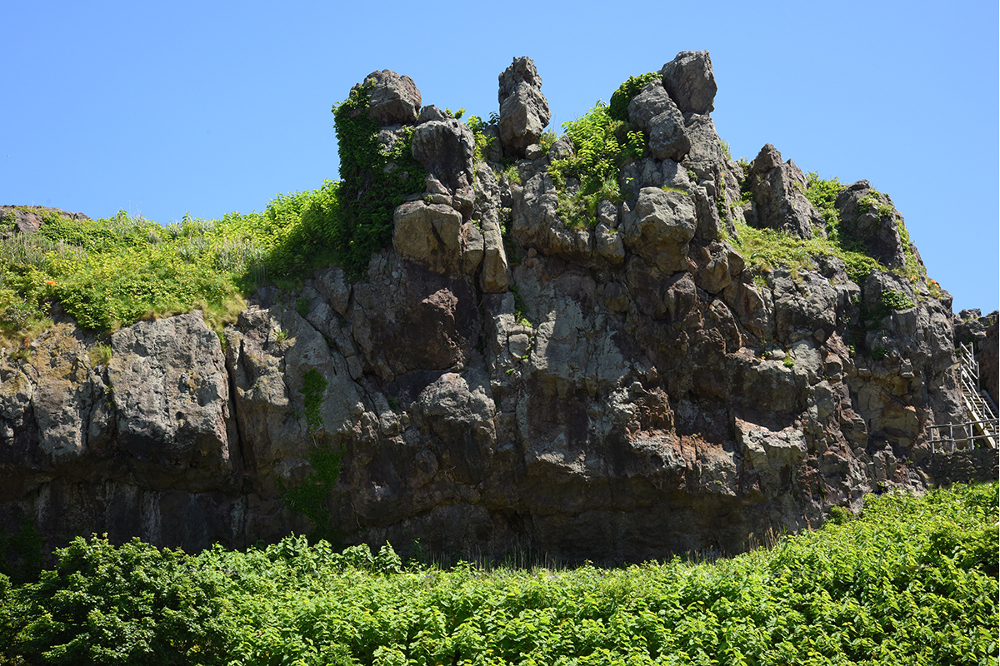
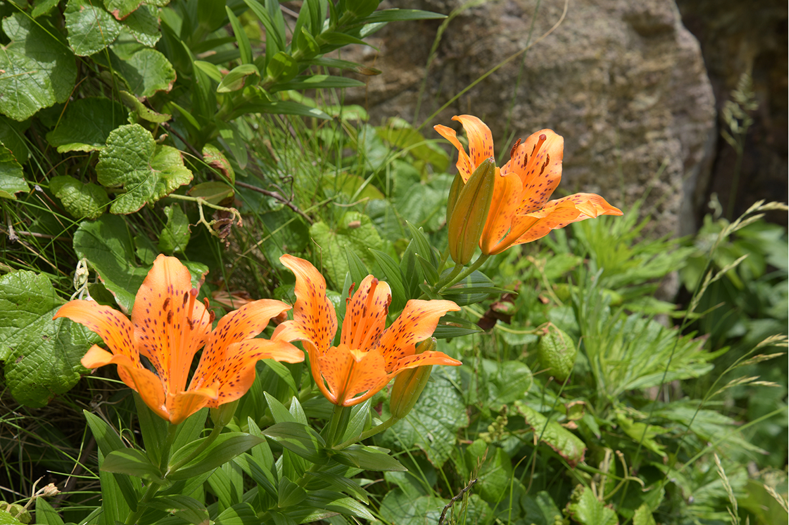
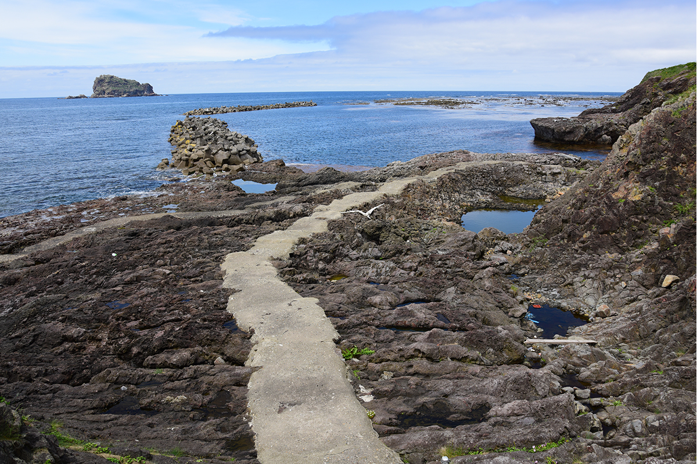
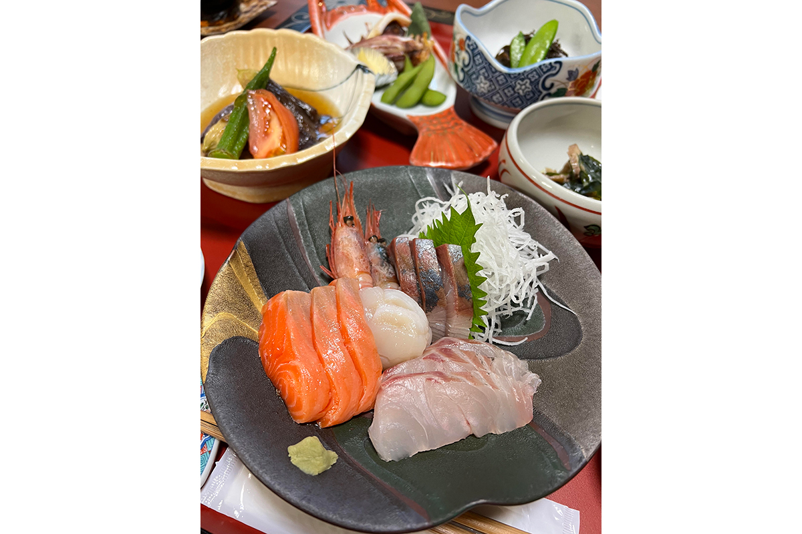

Префектура Ямагата · Саката · остров Тобисима
Тобисима: единственный обитаемый остров Ямагаты и скалы из застывшей лавы

Обитаемых островов на севере Хонсю совсем немного, и у префектуры Ямагата такой остров всего один. Тобисима лежит в Японском море в часе с небольшим от порта Саката, и её берега выглядят так, будто лава застыла здесь на ходу.
Остров
Единственный на всю префектуру
В Тохоку, северо-восточной части Хонсю, жилых островов изначально мало. Почти все они собраны у побережья префектуры Мияги, а в Иватэ, Аомори и Акита их нет совсем. В Ямагате обитаемый остров один, и это Тобисима. Фотограф и знаток японских островов, автор этого маршрута, считает его не просто интересным, а по-настоящему поразительным.
Дело в камне. Больше 10 миллионов лет назад здесь изливалась лава, и, видимо, из-за своей вязкости она застыла почти сразу, едва начав вспучиваться из-под земли. Такие причудливые каменные глыбы можно увидеть только у скалы Татэива и рядом с ней.

Геопарк
Прогулка вдоль лавового берега
Тобисима признана геопарком, то есть, если перевести слово буквально, «парком земли». Знакомство с островом поэтому лучше всего начинать с камня. От пляжа Комацухама вдоль моря идёт береговая тропа, и пейзаж на ней непривычный на каждом шагу: лава, сложенная тонкими слоями, как мильфей, гладкие изогнутые поверхности, похожие на складки, и узкие расщелины, врезанные в море, как трещины в леднике.

Если уйти от этого берега дальше, можно добраться до побережья Арасаки. Здесь растёт тобисима-кандзо, лилейник, характерный для этого острова. Цветёт он недолго и к началу июля отцветает, но и без цветов по деревянному настилу приятно пройтись, глядя на открытое море.
Маршрут, который советует фотограф, укладывается в три шага:
- прогулку по геопарку начать со скалы Татэива;
- взять напрокат велосипед и доехать до рощи деревьев табу;
- на побережье Арасаки посмотреть на простор Японского моря.
Остров Тобисима
- Адрес
- префектура Ямагата, Саката, Тобисима
- Телефон
- +81 234-26-5759 (отдел по обменам и туризму мэрии Сакаты)
- Как добраться
- от порта Саката на рейсовом судне до порта Тобисима около 1 часа 15 минут; обычно один рейс в день, в высокий сезон один или два
По данным на июнь 2023 года, на острове жили 167 человек. Площадь Тобисимы 2,75 км², длина береговой линии 10,2 км.
Ночлег
Рёкан у пристани
Суда приходят в квартал Кацуура, и здесь же стоит рёкан «Савагути». Гостиница работает с давних времён, и её ведут молодые хозяева, которым прежние владельцы передали дело. Кормят здесь щедро, а цены за ночлег, по словам фотографа, вполне разумные.

Рёкан «Савагути»
- Адрес
- префектура Ямагата, Саката, Тобисима, Кацуура, 73
- Телефон
- +81 50-1808-0797 (бронирование, автоответчик)
Фото: Ёдзи Като.